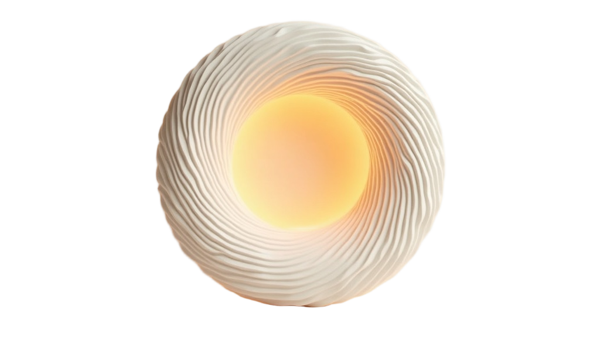

Ryan Dhana · Founder
Building brands that connect.
Founder of Bio Green Elixirs. Creating products, stories and experiences people remember.
Ideas take shape…
Every brand starts as a thousand loose threads.
The Core
…find their centre…
Strategy, story and product — pulled into one glowing focus.
Perspective
…and their angle.
BIO N:OV — a fermentation-science supplement brand, built from zero and taken global.
Scroll